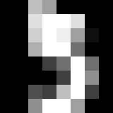

Handwritten Digit Recognition
Recognize handwritten digits using boundary representation, regional descriptors, shape features and moments.
01. Select Input Image
Or choose a sample image
Sample 1

Sample 2
02. Original Image
Select or upload an image to preview.
03. Image Processing Results
Preprocessed Image
Boundary Representation
Regional Features
04. Recognition Results
Predicted Digit
--
Waiting for image processing...